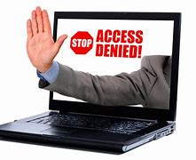

Ethical issues

Censorship and the Internet
Censorship is the act of removing content that people can view, publish and access. Some countries use censorship to block out other political opinions. There is much debate about the extent to which government should be able to control what we have access to and decide what is best for the public
Monitor Behaviour
People's conduct is observed using computers in a variety of settings. in many Employers track productivity at work using websites and applications Workers access these and spend time doing so.
However, there is a worry that personal information insights could disclose items that are harmful to some people. Data mining revealing is a typical illustration. that a specific person has a high risk of contracting a specific disease. Due to this Depending on the facts, an insurance provider may refuse to cover them or raise the rate. This raises moral concerns regarding whether businesses that identify these patterns have a the duty to relay this information to users.

Analyse Personal Information
Recently, businesses have realised the potential of data, which can provide important insights into individuals and their conduct. Big data, which consists of a lot of data from many sources, can be evaluated to draw conclusions about, for instance, people's behaviour and likes and dislikes. Data mining is a method that can be used to find previously undiscovered relationships between two variables or to create customised political propaganda and targeted advertising.
However, there is a worry that personal information insights may expose things that are harmful to particular people. A typical example is data mining revealing that a specific person has a high probability of contracting a specific disease. With this knowledge, an insurance provider can refuse to cover them or impose a higher premium. This raises moral concerns regarding whether businesses that identify these patterns have athe duty to relay this information to users.
Piracy and Offensive Communication


Piracy is the illegal copying of material, including music and movies as well as software. Although the Internet has made it simpler than ever to find this kind of stuff online, it is up to the individual to decide whether or not this is morally right. This is a form of theft and is prohibited.
Layout, Colour Paradigms and Character Sets
Layout
Additionally, websites must be made accessible to those with disabilities such as vision impairments. A decent website will accommodate users who need to increase font size or change contrast in order to easily see the website's contents. For the benefit of those with vision impairments, websites should include screen magnifier functionality as well as alternate text (alt text) for pictures. For people who have hearing issues, audio files should be given alongside transcripts.
Colour Paradigms
Web designers must consider how various colors are perceived around the world when selecting a color scheme for a website. In some cultures, certain hues are considered unlucky and have other negative associations.
Character Sets
The content of websites must be translated into several languages in order to make them accessible to the broadest audience possible. Some character sets are too small to contain all of a language's characters. ASCII, which only uses seven bits, is unable to represent all of the Chinese language's characters. Because Unicode can represent more than a million characters, it is the character set of choice.